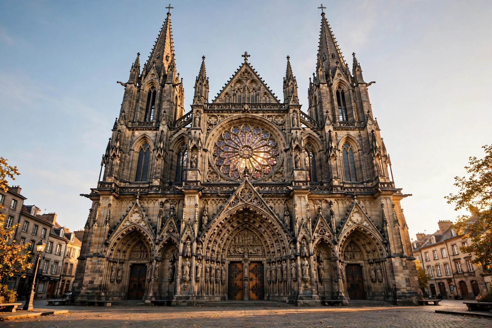

CathedralA cathedral is a church that contains the cathedra (Latin for 'seat') of a bishop, thus serving as the central church of a diocese, conference, or episcopate. Churches with the function of "cathedral" are usually specific to those Christian denominations with an episcopal hierarchy, such as the Catholic, Eastern Orthodox, Anglican, and some Lutheran churches.
Cathedrals emerged as bishops' churches in the late Roman Empire. In the Middle Ages they became centres of learning, administration and pilgrimage, and the focus of ambitious architecture — from Romanesque Durham and Speyer to Gothic Chartres, Cologne, Canterbury and Milan, with flying buttresses, pointed arches, rib vaults and stained glass.
Besides daily worship, cathedrals host ordinations, diocesan synods and civic ceremonies. A chapter of canons, led by a dean or provost, traditionally administers the cathedral. Many famous churches called cathedrals, such as St Peter's Basilica, are not technically cathedrals; the pope's cathedral is St John Lateran in Rome.
Related terms include pro-cathedral (temporary), co-cathedral, duomo (Italy), Münster (German-speaking lands) and primatial church.